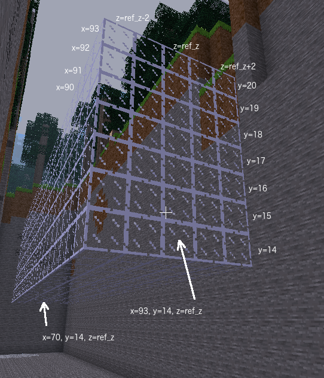

Visit the Minetest world to find your next task. You will have to climb down a ladder to find your next task on two signs. In Minetest you descend ladders using the <shift> key. To ascend, use <space>.
Build a tunnel by building a cuboid of glass and then building a cuboid of air in the centre.
Number sequences are used frequently so Python has a range() function which can
produce them easily. The range() function has up to three arguments, the start value, the stop value and the
increment value. A trap with the range() function is it counts up to but not including
the stop value. This is actually useful because it means when increment is 1 (the default)
the stop value minus the start value is the length of the sequence, and in our case that means the
number of blocks placed.
The three forms of the range() function are:
range(stop)range(start, stop)range(start, stop, increment)Examples
range(3) # equivalent to (0, 1, 2)range(2, 5) # equivalent to (2, 3, 4)range(4, 0) # equivalent to () because range() won't count backwards by defaultrange(4, 0, -1) # equivalent to (4, 3, 2, 1)range(70, 93, 4) # equivalent to (70, 74, 78, 82, 86, 90)Your task in Minetest will have a height, a width, x1, x2, y and z values. These numbers will need to be assigned correctly to the variables ref_z, x_max, x_min, floor_y, tunnel_height, tunnel_width.
In this task store sequences of numbers in range_y_ext and range_z_ext. Start with entering as
lists of numbers. If you feel confident, convert that list to use the range()
function. Once that works, try using variable names and formulae. They will be similar to
those used in range_x, range_y_int and range_z_int.